Papa Francisco
Perú 2018.
Identidad · Manual · Despliegue · 2017–2018 · Perú
El logotipo oficial de la visita del Papa Francisco al Perú, y el manual que tuvo que sostenerlo cuando dejó de estar en nuestras manos.
- Techo del logotipo sin autorización
- 20cm
- El banner mayor
- 7m
- La medalla
- 37mm
- Piezas acuñadas
- 5.000
- Ciudades
- 3
Del símbolo
a la calle.
Dos semanas para el logotipo y su manual. Cinco meses para llevarlo a una sede de prensa entera, tres ciudades y una medalla de plata.
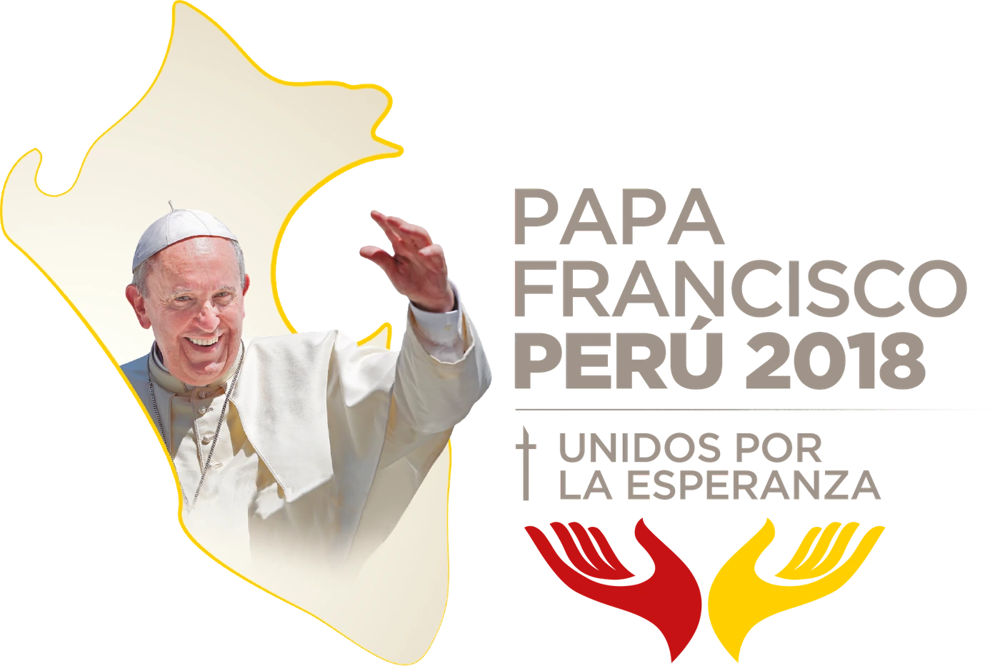
El símbolo
Dos semanas, tres rutas y una fotografía dentro de un mapa.
Ver capítulo ↓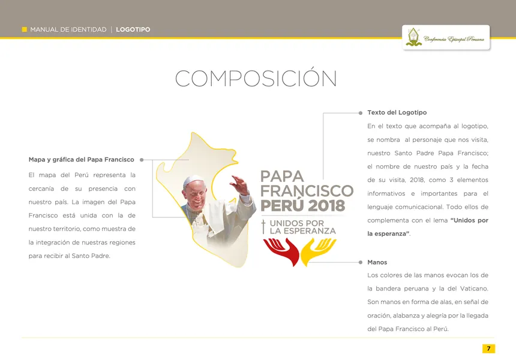
El manual
Treinta y cinco páginas para que la marca sobreviva a su autor.
Ver capítulo ↓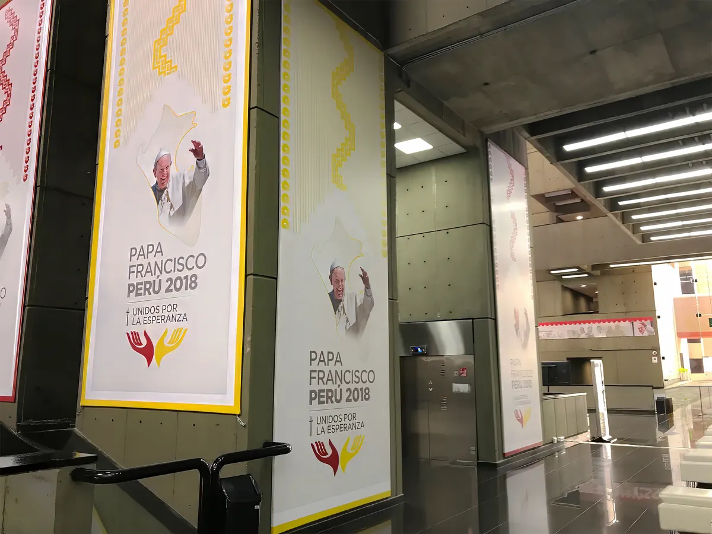
La sede de prensa
Una greca de Chan Chan, dos colores y un edificio de hormigón.
Ver capítulo ↓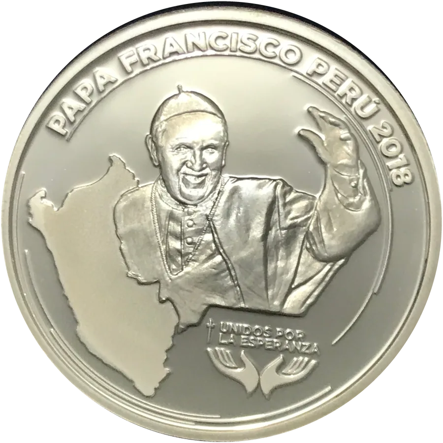
La medalla
La marca sin color y sin fotografía, en 37 milímetros de plata.
Ver capítulo ↓Acto I
El símbolo
Agosto de 2017 · dos semanas
- Autoría
- Diseño integral del branding
Pedro Nozoe - Plazo
- Dos semanas, de la primera propuesta al manual cerrado
- Evento
- Visita apostólica
18–21 de enero de 2018 - Sedes
- Lima · Trujillo · Puerto Maldonado
Dos semanas.
Era la tercera vez que un Papa visitaba el Perú. Juan Pablo II había estado en 1985 y volvió en 1988 para el Congreso Eucarístico Mariano Bolivariano. Treinta años después le tocaba a Francisco — y el anuncio ya se había hecho público.
Ese era el problema. La visita estaba anunciada, los medios pedían información, la logística de un evento nacional no podía seguir esperando, y la Conferencia Episcopal Peruana necesitaba una imagen con la que hablar. La presión llegó a un punto en el que se estuvo a punto de presentar un logotipo que no estaba listo. No ocurrió.
Ahí entré yo, y el plazo era el que era: dos semanas. No dos semanas para el símbolo y ya veremos después el manual. Dos semanas para todo — investigación, propuestas, refinamiento, artes finales y las treinta y cinco páginas del manual de identidad. Un solo diseñador de principio a fin.
Trabajar así obliga a decidir muy pronto qué es lo importante. Y lo importante no era el símbolo.
Una identidad de evento nacional no la aplica su autor. La aplican parroquias de provincia, imprentas locales, proveedores de merchandising, medios, voluntarios con una plantilla y prisa. El logotipo tenía que aguantar todo eso sin nadie encima vigilando. Por eso no diseñé un logotipo y después escribí un manual: diseñé pensando en el manual.
- Días de la primera propuesta al manual cerrado
- 14
- Visitas papales analizadas como referente
- 9
- Propuestas presentadas en la primera ronda
- 6
- Páginas del manual de identidad
- 35
- Diseñador, de principio a fin
- 1
El género ya tenía reglas.
Con dos semanas por delante, la tentación es abrir Illustrator el primer día. No lo hice. Antes de dibujar nada reuní los logotipos oficiales de las visitas papales anteriores. Río 2013, Ecuador, Bolivia y Paraguay en 2015, México 2016, Egipto, Fátima y Colombia en 2017, y Chile, que ocurría la misma semana que Perú.
No fue un ejercicio de inspiración. Fue un ejercicio de reconocer convenciones. Puestos uno al lado del otro, el patrón salta a la vista: casi todos usan la silueta del país, los colores de la bandera nacional, una cruz y la figura del Papa. El lema, siempre presente, casi siempre en dos líneas.
Saber eso servía para dos cosas opuestas y ambas necesarias. Una: entender qué esperaba ver la institución, porque un logotipo papal que ignora el género se lee como un error, no como una audacia. Dos: identificar dónde quedaba margen real para diferenciarse.
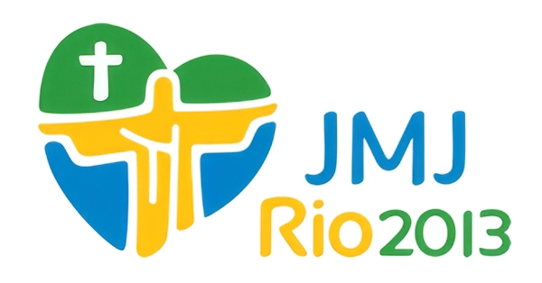
Río 2013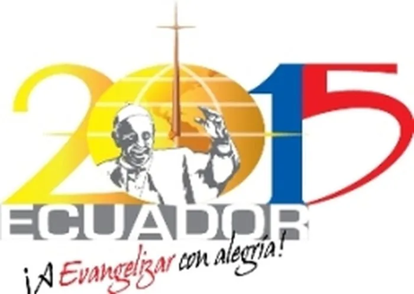
Ecuador 2015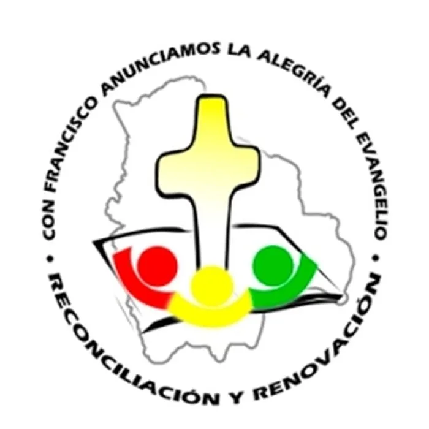
Bolivia 2015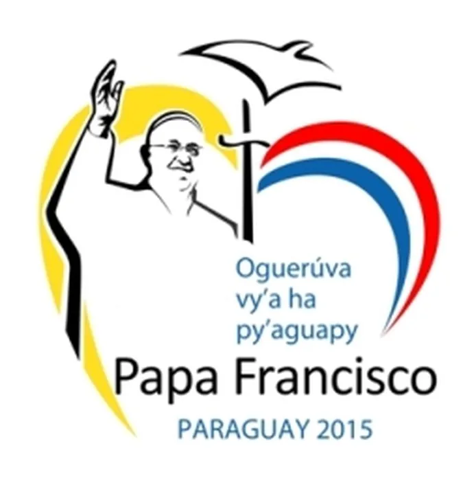
Paraguay 2015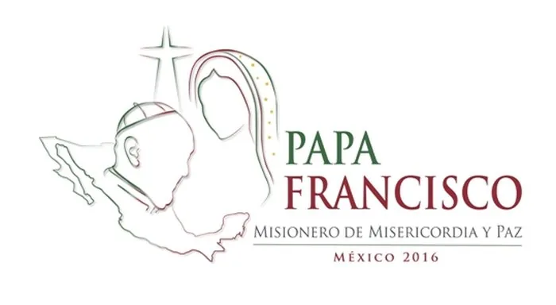
México 2016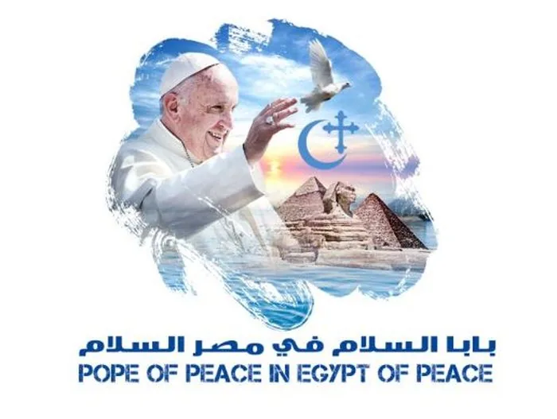
Egipto 2017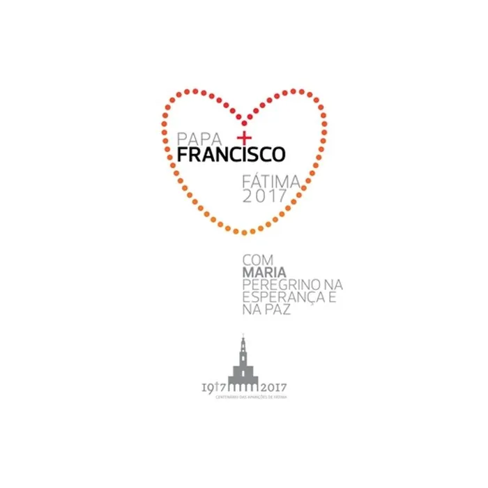
Fátima 2017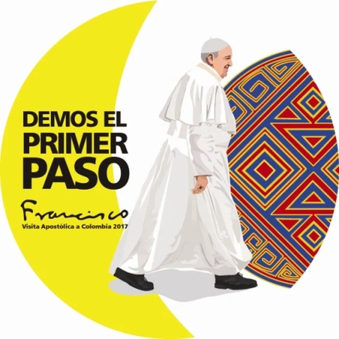
Colombia 2017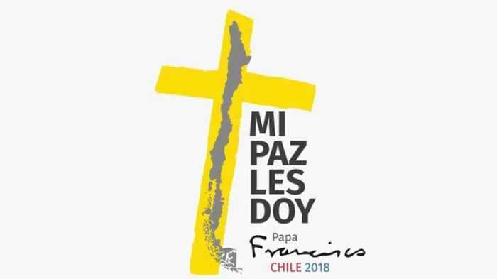
Chile 2018
Referentes analizados. Logotipos oficiales de visitas papales anteriores, reunidos como material de estudio durante la fase de investigación. Son obra de sus respectivos autores y se reproducen aquí únicamente para documentar el análisis.
Nueve referentes, un mismo esqueleto: mapa, bandera, cruz, Papa. La pregunta útil no era cómo romperlo, sino qué elemento podía cambiar de naturaleza sin que el conjunto dejara de leerse.
Tres rutas,
seis propuestas.
Con el plazo encima, lo cómodo habría sido llevar una sola propuesta y defenderla. Hice lo contrario: tres rutas de verdad distintas, cada una con dos ejecuciones, y cada una defendible por sí sola.
No fue generosidad. Con dos semanas no hay margen para una segunda ronda desde cero: si la única propuesta no convence, se acabó el proyecto. Presentar tres direcciones era la forma de garantizar que de esa reunión saliera una decisión, no un «déjame pensarlo».
El elemento que decidí cambiar de naturaleza fue la figura del Papa: en lugar de una ilustración, una fotografía recortada e integrada dentro del mapa. Las tres rutas compartían esa apuesta y se separaban en todo lo demás — tipografía, temperatura, grado de formalidad institucional.
Palo seco y manos a color
Gotham en caja alta, bloque de texto alineado a un eje vertical, y dos manos en forma de alas —una roja, una amarilla— como remate inferior. La más contemporánea y la más legible en tamaños pequeños.
Serif institucional y paloma
Tipografía con serifas, paleta reducida a beige y rojo, y una paloma sustituyendo a las manos. Más solemne, más cercana al lenguaje eclesiástico tradicional. Perdía frescura y ganaba distancia.
Composición en escudo
Todo el conjunto contenido dentro de una forma tipo escudo, con degradado y paloma superior. Resolvía bien el formato cuadrado de redes, pero encerraba el símbolo y complicaba cualquier aplicación horizontal.
Tablas de presentación, ronda 1. Cada propuesta se presentó aislada y a gran tamaño, sin mockups ni escenografía. Cuando el cliente es una institución, el logotipo debe convencer desnudo.
La ronda que no se ve.
Elegida la ruta 1, empezó el trabajo que nunca aparece en un portafolio: cuatro variantes que a primera vista parecen la misma.
Se movió la orientación del mapa, se probó el contorno en amarillo y en azul, se cambió el texto de derecha a izquierda, se ajustó dónde caía la mano del Papa respecto al borde del territorio. Ninguna de esas decisiones es espectacular. Todas afectan a cómo se comporta el logotipo cuando alguien lo mete en una plantilla de PowerPoint a 200 píxeles.
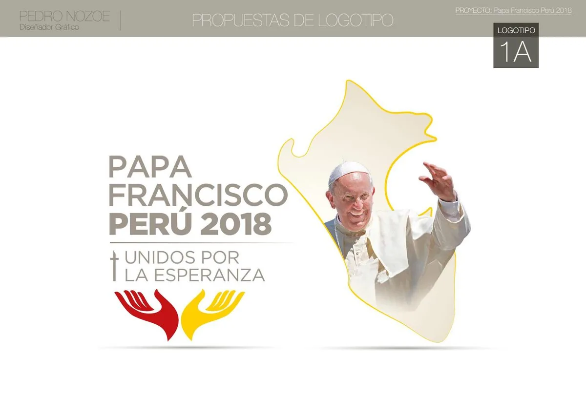
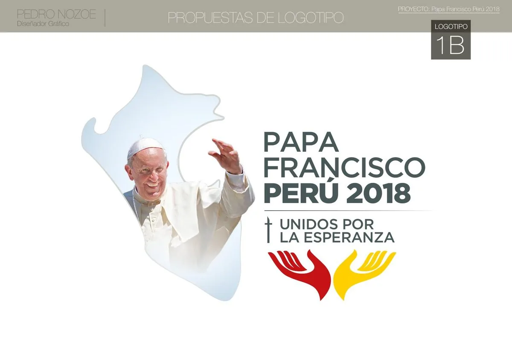
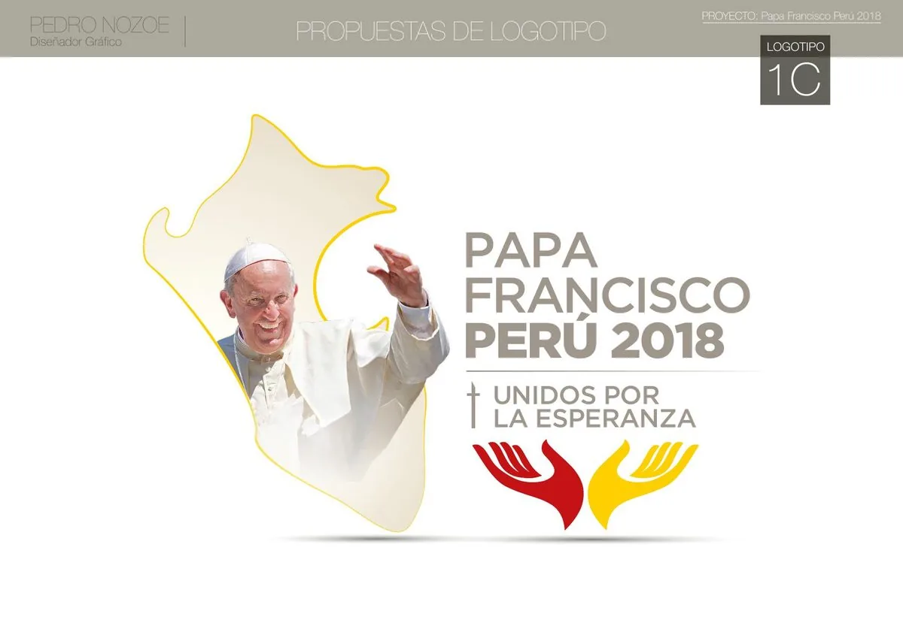
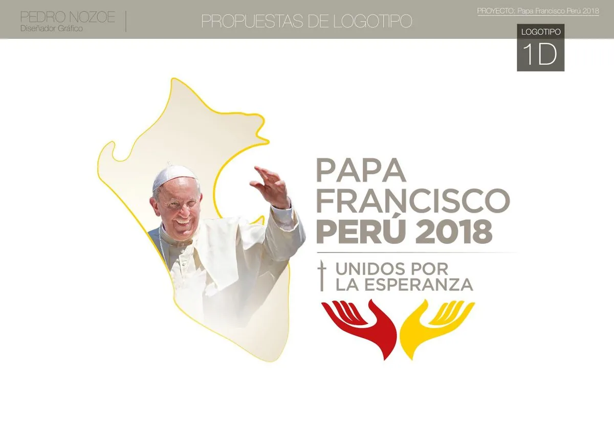
Ganó la versión con el mapa a la izquierda y el contorno amarillo: el amarillo enlaza con la bandera vaticana, y con el mapa a la izquierda el gesto del brazo del Papa apunta hacia el texto en lugar de salirse de la composición.
Qué significa
cada parte.
Un logotipo institucional necesita poder explicarse en voz alta, en una reunión, ante gente que no es del oficio. Este se explica en cuatro piezas.
La decisión
que costó algo.
Usar una fotografía del Papa en lugar de una ilustración fue lo que le dio calidez al logotipo. También fue lo que le puso un techo.
Un logotipo vectorial se amplía sin límite. Este no: lleva píxeles dentro. Eso significaba que había un tamaño de impresión a partir del cual la cara del Papa se rompía — y en un evento con gigantografías de siete metros, ese no es un detalle menor.
Había dos salidas. Cambiar la foto por un dibujo y perder lo que hacía distinta a la propuesta, o asumir la restricción y documentarla. Elegí lo segundo, y el manual lo dice sin adornos: hasta 20 cm de ancho, cualquiera puede imprimir; por encima de eso hay que pedir el archivo al área de comunicaciones de la Conferencia Episcopal.
No es una limitación disimulada. Es un procedimiento. Convierte un riesgo técnico en un canal de control, y de paso obliga a que las piezas grandes pasen por alguien que sabe lo que hace.
- Ancho máximo de impresión sin autorización
- 20 cm
- Mínimo impreso, versión horizontal
- 3,2 cm
- Mínimo digital, versión horizontal
- 200 px
El sistema alrededor.
El manual dedica siete secciones a lo que rodea al símbolo: presentación, historia, logotipo, aplicaciones de uso, color, tipografía y recursos gráficos. Treinta y cinco páginas pensadas para ser consultadas por alguien con una duda concreta y poco tiempo.
Color
Pantone 402 CC36 M33 Y38 K14R161 G151 B141C10 M100 Y100 K10R197 G19 B21C0 M18 Y100 K0R255 G208 B0R255 G255 B247→ R232 G222 B204El marrón, no el rojo, es el color principal: sostiene toda la tipografía institucional. El rojo y el amarillo quedan reservados para el símbolo de las manos, que es donde tienen que gritar.
Tipografía
Thin, Light, Medium y Black. Encabezados, títulos, subtítulos y cuerpo de texto. Predomina en todo el material, impreso y digital.
Light y Bold. Complemento para destacar subtítulos. Su rol está acotado a propósito: cuantas menos decisiones tipográficas queden abiertas, menos maneras hay de equivocarse.
Del pin a la valla.
El manual no se queda en las reglas: resuelve por adelantado las piezas que sabía que iban a pedirse. Papelería, posts de redes con sus medidas exactas, banderolas verticales y horizontales en versión institucional e informativa, banners web, polos de hombre y mujer, gorra, pin, vallas publicitarias, paneles y cierres de vídeo.
Cada aplicación resuelta de antemano es una improvisación que no va a ocurrir. Y en un evento donde decenas de proveedores producen en paralelo contra reloj, eso es exactamente el punto.
Qué queda
El manual era el entregable.
Durante cuatro días de enero de 2018, en Lima, Trujillo y Puerto Maldonado, ese logotipo apareció en sitios donde yo no estuve, aplicado por gente a la que nunca conocí, sobre materiales que no elegí.
Funcionó porque el trabajo no terminó en el símbolo. Terminó en un documento que anticipaba las preguntas: cuánto espacio dejar alrededor, qué hacer si solo cabe en vertical, hasta qué tamaño se puede imprimir, a quién escribir cuando no alcanza. Diseñar la identidad de un evento así es, sobre todo, escribir bien las instrucciones.
Acto II
El despliegue
Septiembre de 2017 – enero de 2018 · cinco meses
De 20 cm
a 7 metros.
El logotipo de la visita papal llevaba una fotografía dentro. Eso le ponía un techo de 20 cm de ancho. Entre agosto de 2017 y enero de 2018 hubo que vestir con él una sede de prensa entera, tres ciudades y una medalla de 37 milímetros.
- Sede de prensa
- Ministerio de Cultura, Av. Javier Prado Este, San Borja
- Producción
- Agosto 2017 – enero 2018
- Meses de producción
- 5
El manual terminaba donde empezaba el problema.
El manual de identidad se cerró el 1 de septiembre de 2017. Documentaba el logotipo, sus reservas, su mínimo y su máximo —20 cm de ancho sin autorización, porque dentro hay un mapa de píxeles— y sus aplicaciones: papelería, banderolas, vallas, polos, gorra, pin.
Como único apoyo visual establecía «un fondo monocromático con elementos lineales»: un degradado cálido recorrido por curvas finísimas. Funciona en una hoja A4 y en un banner web. En una fachada de hormigón de siete metros desaparece.
La marca no podía crecer. Así que lo que creció fue todo lo demás.
La greca que no está en el manual.
El primer archivo del Centro Internacional de Prensa es del 5 de diciembre de 2017, tres meses después de cerrar el manual. Ahí aparece por primera vez un sistema que no está documentado en ninguna de las 35 páginas: una greca construida a partir de los frisos de Chan Chan, la ciudad de barro de la cultura Chimú.
Tiene tres estados, y ninguno necesita el logotipo para funcionar:
-
Cenefa. La figura repetida en banda, como en el friso original. -
Zigzag. La misma pieza compone un recorrido escalonado. -
Corte. El escalonado macizo separa color de papel.
El campo de líneas verticales es la única herencia literal del manual: las curvas suaves del fondo, enderezadas. Rectas imprimen limpias a cualquier tamaño; las curvas finas, no.
El color hace el trabajo pesado.
El logotipo es beige, gris y dos manos de color. A cuarenta metros, en un vestíbulo de hormigón visto, no se lee. La señalética resuelve la distancia por color antes que por marca: rojo para lo institucional, amarillo para lo informativo, beige de papel para el fondo.
Una sede de prensa desde cero.
El Centro Internacional de Prensa se montó en el Ministerio de Cultura de Lima: un edificio brutalista, de hormigón oscuro y dobles alturas, que no perdona la gráfica pequeña. El inventario que hubo que producir, con sus medidas reales:
- Vinilo institucional7,20 × 0,88 m
- Cartel de sala de prensa4 × 1 m
- Banderolas2,80 × 7 m
- Vinilos informativos0,60 × 1 m
- Tótems1 × 2,40 m
- Backing de fotografías1,85 × 2,12 m
- Frente de mesa de registro, rótulos de acceso y señalética de escaleras y servicios—
Seis propuestas para decir dos palabras.
Un cartel que dice «Sala de prensa» se presentó en seis versiones. El vinilo de entrada que dice «Bienvenido», en otras seis. No es indecisión: es el método del primer encargo —llevar varias rutas cerradas para forzar una decisión en una sola reunión— aplicado a la producción, cuando ya no quedaba plazo para presentar una opción y esperar comentarios.
La marca sin color y sin fotografía.
El Banco Central de Reserva del Perú acuñó una medalla conmemorativa de la visita. Plata 0,925, una onza troy, 37 mm de diámetro, calidad proof, canto estriado, emisión máxima de 5.000 piezas.
Es la prueba de traducción más dura del proyecto. El logotipo depende de una fotografía y de dos colores; en metal no tiene ninguno de los dos. Hubo que rediseñarlo como relieve: el mapa del Perú pasa a plano hundido, la figura del Papa a volumen, el lema a bajorrelieve. Nada de la marca original sobrevive salvo su estructura.
- Metal
- Plata 0,925
- Peso
- 1 onza troy
- Diámetro
- 37 mm
- Emisión
- 5.000 piezas
Anverso y reverso · clic para girar
El papel viaja solo.
Postales para Serpost en dos formatos, calendario de escritorio de trece hojas, folder institucional, invitación oficial a la inauguración y credenciales diferenciadas por color según el tipo de acceso. Piezas que circulan sin que nadie esté al lado explicando el sistema: tienen que llevar las reglas puestas.
Lo que quedó en pie.
El manual pesa 35 páginas y describe una marca que no puede pasar de 20 centímetros. El despliegue pesa toneladas y cabe en 37 milímetros. Entre esos dos extremos hay un solo sistema, y la mitad se escribió después de cerrar el manual —en producción, contra el calendario, resolviendo cada pieza con lo que la anterior había dejado probado.
Un manual no termina un proyecto. Solo termina un documento.
Hablemos.
Cuéntame qué tiene que resolver tu marca cuando tú no estés delante. Te respondo en 24 horas, sin compromiso.
Necesito una identidad que otros van a aplicar sin mí.
Cuéntanos los detalles y lo aterrizamos.
Perfecto, te mando el brief esta tarde